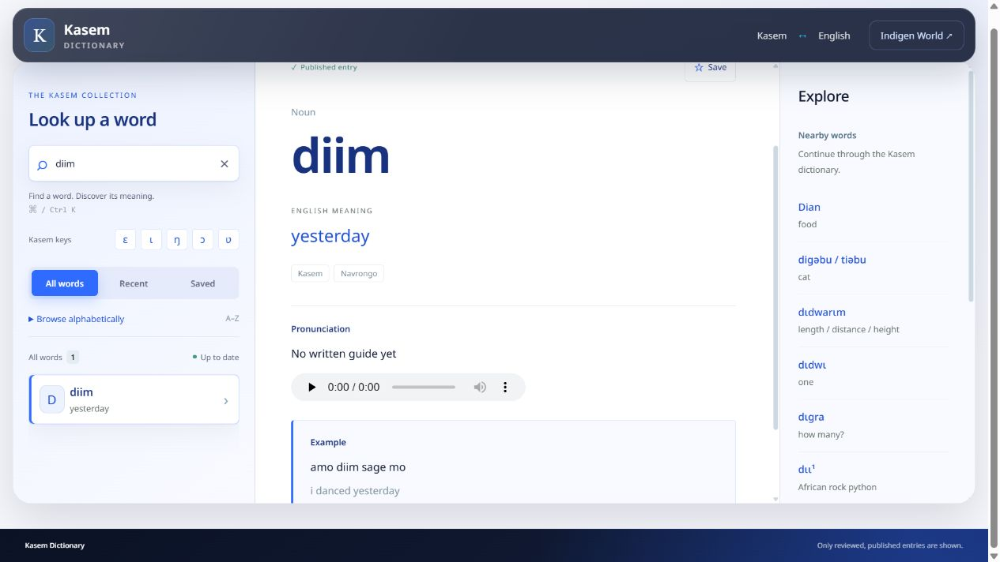

Another 25 Kasem Dictionary entries now have reviewed pronunciation audio. This second listening round brings the two releases to 43 words with a pronunciation in the main player. Chinedum checked each available take and selected the recordings to add.

The new recordings include diim (yesterday), Asibiti (hospital), tio (tree), zuna (birds) and ŋwea (life). Learners can connect the written word with a sound, replay it and practise alongside a Kasem speaker.
The full set is diim, Asibiti, done, Kukua, Sa, tio, teeni, zuna, bia, naneo, logo, lim, pae, nii, kwei, taa, kare, tiŋi, tigisi, bena, chane, te-pwoŋa, tetare, siu and ŋwea. The meanings and dialect labels remain alongside each entry.
Open the Kasem Dictionary, search for one of these words and use its pronunciation player. Check the meaning and dialect label before practising. The website reads the new recordings through its existing player; no app download is needed to use this website update.
Chinedum reviewed 61 generated takes for 40 new words. Twenty-six takes across 25 words were approved, and the remaining 35 were marked as needing another recording. Both takes of zuna were accepted; the current player uses one, and the other is retained with the entry.
The new pronunciations are labelled as AI-generated with Google Gemini and reviewed by Chinedum. Original dictionary source credits remain in place. Approval applies to the selected takes, not to every Kasem word or every dialect a model might attempt. The other 15 words in this listening round have not received audio from this release.
These recordings were published on 27 September 2026. Across the two releases, 45 approved takes are retained for 43 distinct entries, with one recording available in each entry’s main player.